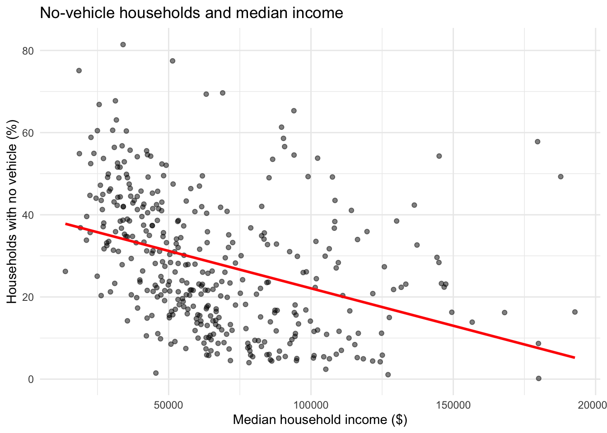
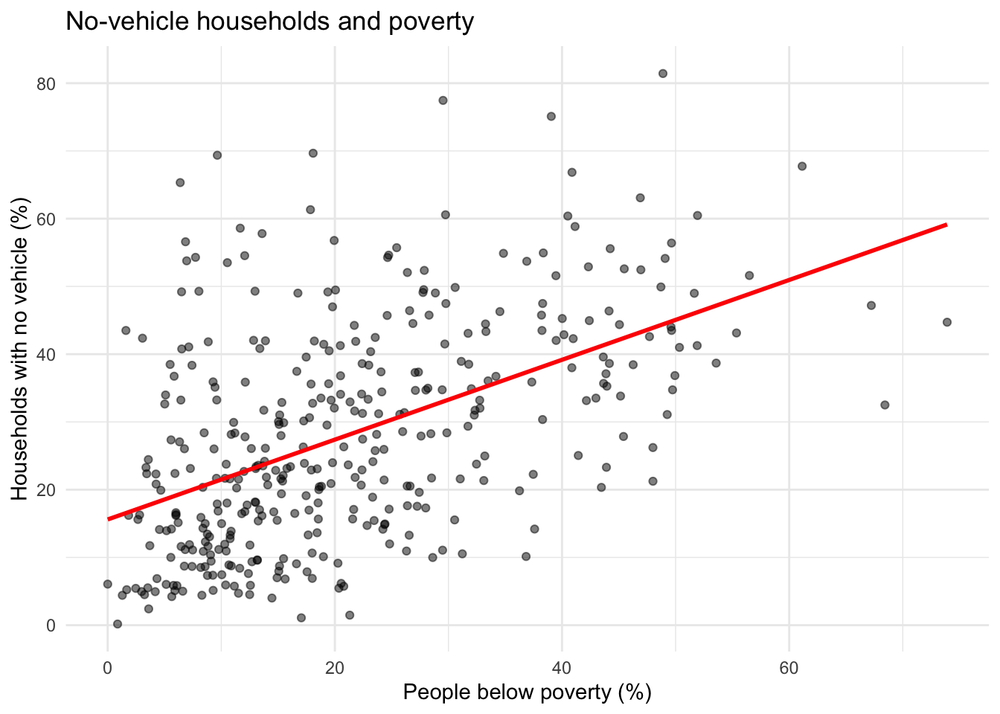
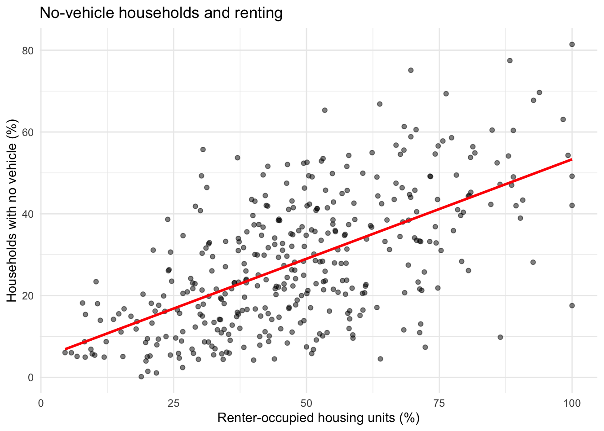
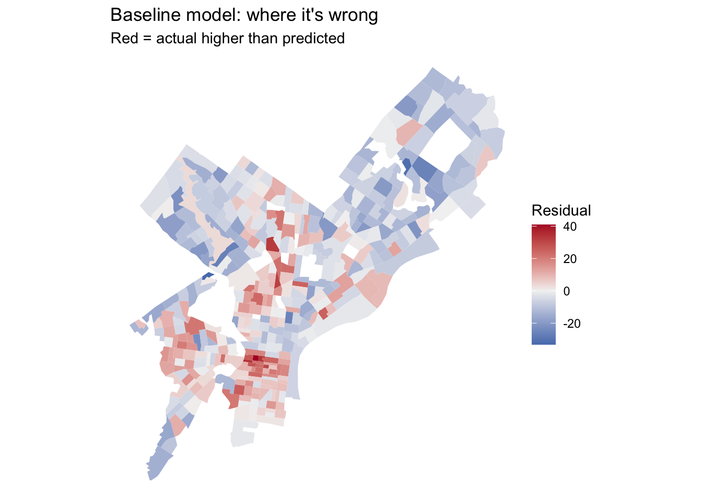
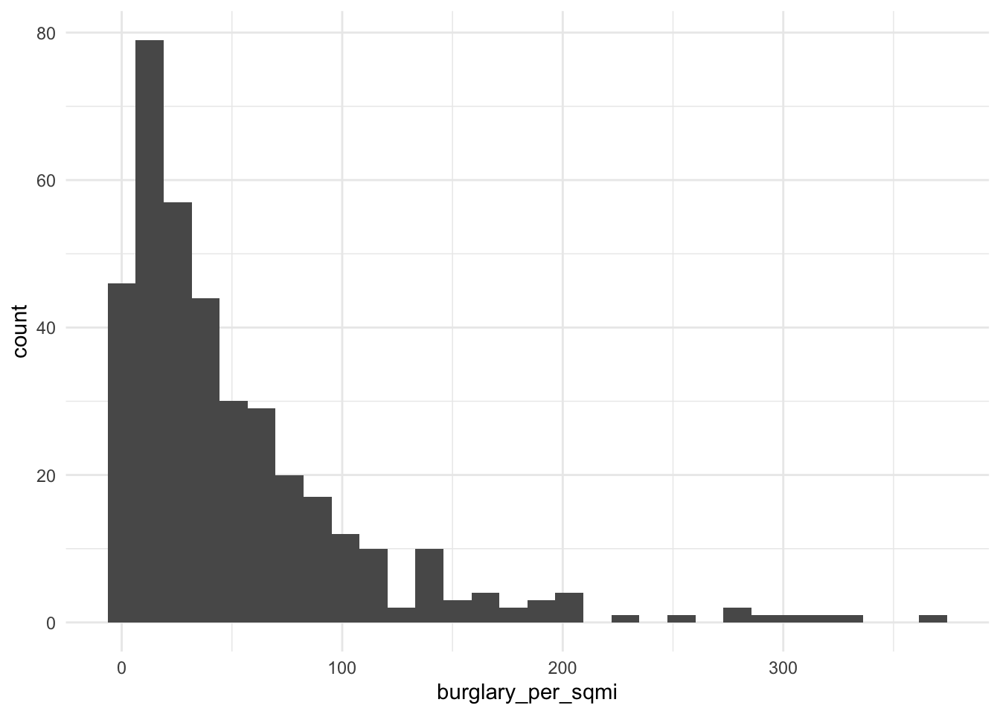
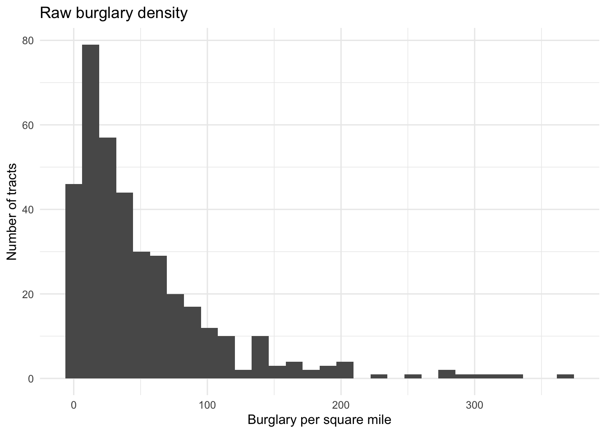
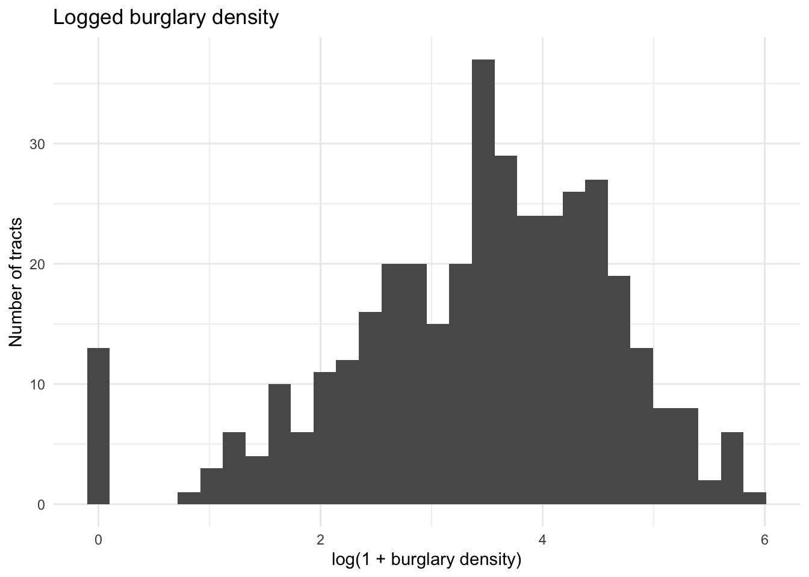
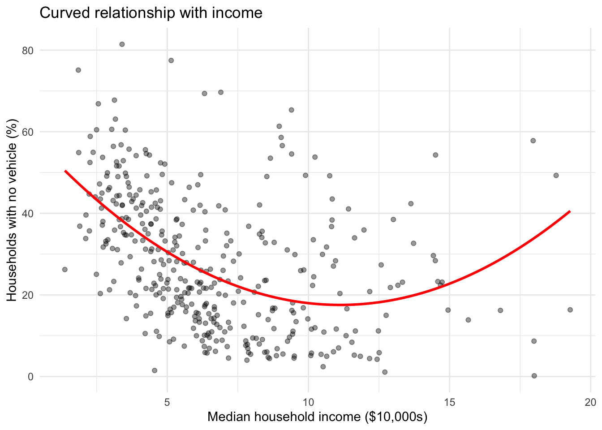
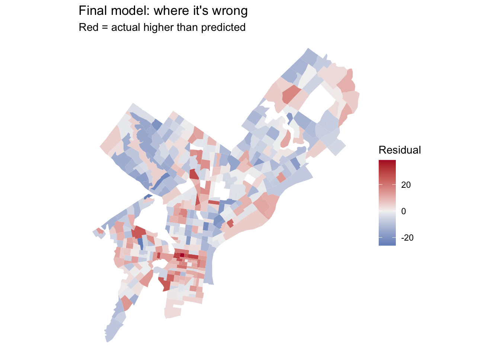
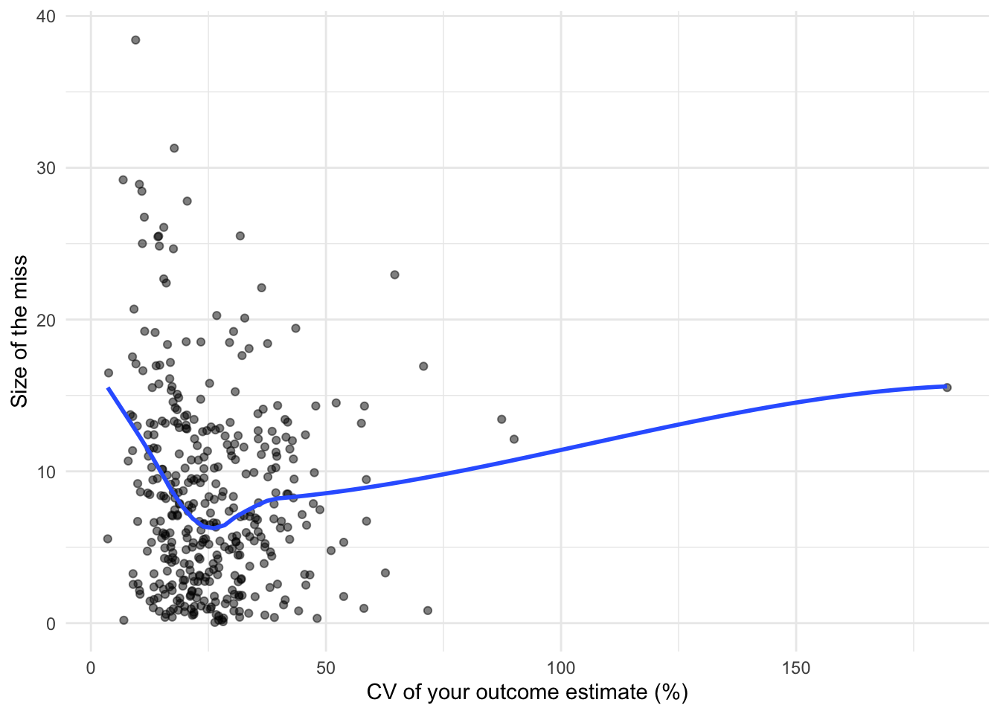

Code
library(tidyverse)
library(tidycensus)
library(sf)
library(caret)
Sys.getenv("CENSUS_API_KEY") != "" # should print TRUE[1] TRUEMUSA 5080 · Integrates Weeks 1–5 · Due Friday, October 16
This is not a competition. There’s no leaderboard and no target RMSE. The goal is to practice the full prediction workflow on a question you choose, and to find out what actually helps. Some features you’re sure will help won’t, and some you add on a whim will. Both are findings.
You’ll:
Timing. Parts 1–4 use only what we’ve covered through Week 5. You can finish them before the October 9 lecture. Part 5 is new material; the lecture explains it, and the instructions below give you the essentials.
Type the code yourself. The worked examples show the pattern. Your job is to apply it to your outcome and your data choices.
Every model is cross-validated on the same tracts with the same folds, so the rows in your model log are comparable. If a new variable has missing values, fill them (for example, 0 for a count, or the median with a note) or choose a different variable. The cv_rmse() helper below will stop and tell you if you break this rule.
Your outcome comes from the 2019–2023 ACS. Pull open data from 2023 or earlier (2021–2023 is ideal). Using 2025 data to predict a 2023 outcome uses information from the future, which a real prediction model would never have.
Don’t use any variable that’s built from your outcome or measures the same thing another way. Ask yourself: would an agency trying to predict this outcome for a tract have this variable? If the answer is “only because it’s basically the outcome,” leave it out.
library(tidyverse)
library(tidycensus)
library(sf)
library(caret)
Sys.getenv("CENSUS_API_KEY") != "" # should print TRUE[1] TRUEThis function runs 10-fold cross-validation with the same seed every time, so every model in your log is tested on the same folds. You don’t need to change it. Read it once so you know what it does.
ctrl <- trainControl(method = "cv", number = 10)
cv_rmse <- function(formula, data) {
df <- if (inherits(data, "sf")) st_drop_geometry(data) else data
vars <- all.vars(formula)
bad <- vars[sapply(vars, function(v) any(is.na(df[[v]])))]
if (length(bad) > 0) {
stop("These variables have NAs: ", paste(bad, collapse = ", "),
". Fill them or choose another variable (Rule 1: don't drop rows).")
}
set.seed(5080)
fit <- train(formula, data = df, method = "lm", trControl = ctrl)
fit$results$RMSE
}Every time you fit a new model, add a row. By the end, this table is the story of your assignment.
model_log <- tibble(
model = character(),
added = character(),
cv_rmse = numeric(),
notes = character()
)Pick a tract-level ACS variable for Philadelphia that matters for policy. Two outcomes are off limits: median gross rent (we did it in lab) and median home value (save it for A4).
Some ideas if you’re stuck:
| Outcome | Why an agency might care | ACS table |
|---|---|---|
| % of households with no vehicle | Transit planning | B08201 or B25044 |
| Mean travel time to work | Access to jobs | B08013_001 ÷ B08303_001 |
| % of people below poverty | Targeting services | B17001 |
| % of housing units vacant | Housing and blight | B25002 |
| % of households overcrowded | Housing conditions | B25014 |
Use load_variables(2023, "acs5") to browse and find exact variable codes.
Choose three to five ACS predictors for your baseline model. They should be things that plausibly relate to your outcome, but none of them may be built from your outcome (Rule 3).
philly_tracts <- get_acs(
geography = "tract",
state = "PA",
county = "Philadelphia",
variables = c(
total_pop = "B01003_001",
# your outcome's numerator and denominator (or median), e.g.:
vehicle_hh = "B08201_001",
no_vehicle = "B08201_002",
# your baseline predictors, e.g.:
median_income = "B19013_001",
poverty_den = "B17001_001",
poverty_num = "B17001_002",
tenure_total = "B25003_001",
renter = "B25003_003"
),
year = 2023,
output = "wide",
geometry = TRUE,
progress_bar = FALSE
) %>%
st_transform(2272)philly_tracts <- philly_tracts %>%
mutate(
# build your outcome, e.g. a percentage:
y = no_vehicleE / vehicle_hhE * 100,
# and its reliability. For a percentage, use tidycensus::moe_prop();
# for a median or count, use the E and M columns directly.
y_moe = tidycensus::moe_prop(
num = no_vehicleE,
denom = vehicle_hhE,
moe_num = no_vehicleM,
moe_denom = vehicle_hhM
) * 100,
# coefficient of variation
y_cv = if_else(
y > 0,
(y_moe / 1.645) / y * 100,
NA_real_
),
# your predictors:
poverty_pct = poverty_numE / poverty_denE *100,
renter_pct = renterE / tenure_totalE * 100,
reliability = case_when(
is.na(y_cv) ~ "Missing",
y_cv < 12 ~ "High",
y_cv <= 40 ~ "Moderate",
TRUE ~ "Low"
)
)Before you commit, check three things.
# How many tracts have no value for your outcome?
sum(is.na(philly_tracts$y))[1] 20# How reliable is it?
summary(philly_tracts$y_cv) Min. 1st Qu. Median Mean 3rd Qu. Max. NA's
3.572 17.201 23.397 26.254 31.875 182.123 21 philly_tracts %>%
st_drop_geometry() %>%
count(reliability) reliability n
1 High 29
2 Low 45
3 Missing 21
4 Moderate 313# What does the distribution look like?
ggplot(philly_tracts, aes(x = y)) +
geom_histogram(bins = 30) +
theme_minimal()
If more than about a third of tracts have low reliability, consider a different outcome, or one built from larger counts. Write your reasoning either way.
Answer (2–3 sentences): What is your outcome, why would an agency want to predict it, and how reliable is it?
Your answer: My outcome is the percentage of households with no vehicle in each Philadelphia census tract. A transportation or planning agency might want to predict this outcome to identify neighborhoods where reliable transit and other non-car travel options are especially important. Among the original tracts, 29 estimates had high reliability, 313 had moderate reliability, 45 had low reliability, and 21 were missing, so the outcome is reliable enough to model.
Filter once, here, and never again. Every later step uses tracts.
tracts <- philly_tracts %>%
filter(total_popE > 0,
!is.na(y),
# add !is.na() for each baseline predictor like in the in-class lab
vehicle_hhE > 0,
poverty_denE > 0,
tenure_totalE > 0,
!is.na(y_cv),
!is.na(median_incomeE),
!is.na(poverty_pct),
!is.na(renter_pct)
)
nrow(philly_tracts)[1] 408nrow(tracts)[1] 381Answer: How many tracts did you lose, and what kinds of places are they?
Your answer: I began with 408 census tracts and retained 381, so 27 tracts were excluded. Most excluded tracts had zero population or no regular households, including several special-purpose 9800-series tracts; a smaller number had missing household-income estimates. These places therefore do not represent ordinary residential neighborhoods for which all model variables can be measured.
Plot your outcome against each predictor before modeling (the Week 3 habit).
# one scatterplot per predictor, e.g.:
ggplot(tracts, aes(x = median_incomeE, y = y)) +
geom_point(alpha = 0.5) +
geom_smooth(method = "lm", se = FALSE, color = "red") +
theme_minimal() +
labs(
title = "No-vehicle households and median income",
x = "Median household income ($)",
y = "Households with no vehicle (%)"
)
ggplot(tracts, aes(x = poverty_pct, y = y)) +
geom_point(alpha = 0.5) +
geom_smooth(method = "lm", se = FALSE, color = "red") +
theme_minimal() +
labs(
title = "No-vehicle households and poverty",
x = "People below poverty (%)",
y = "Households with no vehicle (%)"
)
ggplot(tracts, aes(x = renter_pct, y = y)) +
geom_point(alpha = 0.5) +
geom_smooth(method = "lm", se = FALSE, color = "red") +
theme_minimal() +
labs(
title = "No-vehicle households and renting",
x = "Renter-occupied housing units (%)",
y = "Households with no vehicle (%)"
)
f1 <- y ~ median_incomeE + poverty_pct + renter_pct
m1 <- lm(f1, data = tracts)
summary(m1)
Call:
lm(formula = f1, data = tracts)
Residuals:
Min 1Q Median 3Q Max
-33.236 -7.837 -1.569 7.624 40.933
Coefficients:
Estimate Std. Error t value Pr(>|t|)
(Intercept) 1.814e+00 3.178e+00 0.571 0.569
median_incomeE -9.025e-06 2.651e-05 -0.340 0.734
poverty_pct 3.731e-01 6.491e-02 5.748 1.87e-08 ***
renter_pct 3.938e-01 3.199e-02 12.311 < 2e-16 ***
---
Signif. codes: 0 '***' 0.001 '**' 0.01 '*' 0.05 '.' 0.1 ' ' 1
Residual standard error: 11.92 on 377 degrees of freedom
Multiple R-squared: 0.4687, Adjusted R-squared: 0.4644
F-statistic: 110.8 on 3 and 377 DF, p-value: < 2.2e-16model_log <- model_log %>%
add_row(model = "m1", added = "ACS baseline",
cv_rmse = cv_rmse(f1, tracts),
notes = "Median income, poverty rate, and renter share")
model_log# A tibble: 1 × 4
model added cv_rmse notes
<chr> <chr> <dbl> <chr>
1 m1 ACS baseline 11.9 Median income, poverty rate, and renter shareAnswer: Write the CV RMSE as a sentence, in your outcome’s units: “On tracts it hasn’t seen, the baseline model misses by about 11.9 percentage points.”
Your answer: On tracts it hasn’t seen, the baseline model misses by about 11.9 percentage points — if the model predicts 25% of households without a vehicle, the actual value is typically somewhere between roughly 13% and 37%.
Save this map. You’ll compare it to your final model’s map in Part 6.
tracts <- tracts %>% mutate(resid_m1 = residuals(m1))
ggplot(tracts) +
geom_sf(aes(fill = resid_m1), color = NA) +
scale_fill_gradient2(low = "#2166ac", mid = "grey95", high = "#b2182b", midpoint = 0) +
theme_void() +
labs(title = "Baseline model: where it's wrong",
subtitle = "Red = actual higher than predicted",
fill = "Residual")
Answer: Where do the residuals cluster? What might those places have in common that your model doesn’t know about? Use this answer to choose your open data layers in Part 3.
Your answer: Positive residuals cluster in and around the central and south-central parts of Philadelphia, while negative residuals are more scattered across outer areas. The baseline model may be missing differences in transit access, urban intensity, walkability, and neighborhood conditions. I therefore chose transit-station access and residential burglary intensity as additional spatial measures.
Many of the city’s datasets on OpenDataPhilly are served through a Carto SQL API. You send a SQL query in a URL, and it sends back data. Ask for format=GeoJSON and st_read() reads the result directly, just like the Indego feed in Week 4.
The pattern:
https://phl.carto.com/api/v2/sql?format=GeoJSON&q=SELECT ... FROM table_name WHERE ...Three pieces of SQL are all you need:
SELECT the_geom, column1, column2 chooses which columns come back. Always include the_geom, or you get no geometry.FROM table_name chooses the dataset.WHERE ... filters rows. Filter in the query, not in R. Some tables have millions of rows, and pulling everything will be slow or fail.This helper builds the URL for you. Spaces and symbols in a URL need encoding, and URLencode() handles that.
carto_get <- function(sql) {
url <- paste0("https://phl.carto.com/api/v2/sql?format=GeoJSON&q=", URLencode(sql))
st_read(url, quiet = TRUE)
}On a dataset’s OpenDataPhilly page, look for the API link. The table name is the word after FROM in the example query. To see what values a column takes before you filter on it, ask for a count in CSV format:
# What kinds of crime are in the incidents table in 2023?
url <- paste0("https://phl.carto.com/api/v2/sql?format=csv&q=",
URLencode("SELECT text_general_code, COUNT(*) AS n
FROM incidents_part1_part2
WHERE dispatch_date >= '2023-01-01' AND dispatch_date < '2024-01-01'
GROUP BY text_general_code ORDER BY n DESC"))
read_csv(url)# A tibble: 32 × 2
text_general_code n
<chr> <dbl>
1 Thefts 37054
2 Other Assaults 25986
3 Motor Vehicle Theft 22478
4 Vandalism/Criminal Mischief 17346
5 All Other Offenses 13334
6 Theft from Vehicle 13002
7 Fraud 7661
8 Aggravated Assault No Firearm 5134
9 Burglary Residential 3800
10 Aggravated Assault Firearm 3320
# ℹ 22 more rowsburglary <- carto_get(
"SELECT the_geom, text_general_code, dispatch_date
FROM incidents_part1_part2
WHERE dispatch_date >= '2023-01-01' AND dispatch_date < '2024-01-01'
AND text_general_code = 'Burglary Residential'"
) %>%
st_transform(st_crs(tracts)) # Carto returns EPSG 4326; translate immediately
n_burglary_before <- nrow(burglary)
n_missing_geometry <- sum(st_is_empty(burglary))
burglary <- burglary %>%
filter(!st_is_empty(.))
n_burglary_before[1] 3800n_missing_geometry[1] 119nrow(burglary)[1] 3681Some records have no location. Drop them with filter(!st_is_empty(burglary)), and count how many you lost. Every point you drop is a point that won’t be counted.
These tables were available on Carto as of this fall. If a query fails, check the dataset’s OpenDataPhilly page for the current table name.
| Data | Table | Filter on | Notes |
|---|---|---|---|
| Crime incidents | incidents_part1_part2 |
dispatch_date, text_general_code |
Pick specific offense types |
| Shooting victims | shootings |
date_ |
Small enough to pull several years |
| 311 requests | public_cases_fc |
requested_datetime, service_name |
Use the count query above to see service names |
| Indego stations | (not Carto) https://www.rideindego.com/stations/json/ |
— | The Week 4 feed |
Datasets not on Carto often have a GeoJSON download link on their OpenDataPhilly page. st_read() reads those URLs too. For example, navigage to https://opendataphilly.org/, find a dataset that you’d like to import. I found city landmarks. On the page there is a link to a GeoJSON file. I simply right-clicked on that hyperlink and copied it and then used st_read() and pasted the link:
landmarks <- st_read(“https://hub.arcgis.com/api/v3/datasets/6b2fe4a0fbe14e0a8e6afceaea230b8e_0/downloads/data?format=geojson&spatialRefId=4326&where=1%3D1”)
Pull at least two layers that you think relate to your outcome. Base your choice on your Part 2C answer.
burglary_2023 <- carto_get(
"SELECT the_geom, text_general_code, dispatch_date
FROM incidents_part1_part2
WHERE dispatch_date >= '2023-01-01'
AND dispatch_date < '2024-01-01'
AND text_general_code = 'Burglary Residential'"
) %>%
st_transform(st_crs(tracts)) %>%
filter(!st_is_empty(.))
trolley <- st_read(
paste0(
"https://opendata.arcgis.com/api/v3/datasets/",
"dd2afb618d804100867dfe0669383159_0/downloads/data",
"?format=geojson&spatialRefId=4326"
),
quiet = TRUE
) %>%
transmute(
station_name = StopName,
system = "Trolley"
)
regional_rail <- st_read(
paste0(
"https://opendata.arcgis.com/api/v3/datasets/",
"cf49c62fbc17430aa818e900556d207e_0/downloads/data",
"?format=geojson&spatialRefId=4326"
),
quiet = TRUE
) %>%
transmute(
station_name = Station_Na,
system = "Regional rail"
)
rapid_transit <- st_read(
paste0(
"https://opendata.arcgis.com/api/v3/datasets/",
"af52d74b872045d0abb4a6bbbb249453_0/downloads/data",
"?format=geojson&spatialRefId=4326"
),
quiet = TRUE
) %>%
transmute(
station_name = Station,
system = "High speed"
)
septa_stations <- bind_rows(
trolley,
regional_rail,
rapid_transit
) %>%
st_transform(st_crs(tracts)) %>%
st_filter(st_union(tracts)) %>%
filter(!st_is_empty(.))
nrow(septa_stations)[1] 102Answer: Why these layers? What do you expect them to capture that the ACS variables don’t?
Your answer: I selected residential burglaries and 2023 SEPTA station locations. Burglary intensity may capture aspects of neighborhood activity, land use, and concentrated urban conditions that are not fully represented by ACS socioeconomic variables. Station locations measure access to fixed-route public transportation, which may allow households to live without a private vehicle.
Every feature below reuses a Week 4 tool. The worked examples use burglaries and Indego stations; you build the same types from your own layers.
How many burglaries fall in each tract?
tracts <- tracts %>%
mutate(n_burglary = lengths(st_intersects(., burglary_2023)))
summary(tracts$n_burglary) Min. 1st Qu. Median Mean 3rd Qu. Max.
0.000 4.000 7.000 9.446 13.000 48.000 A tract with no burglaries gets 0, not NA, so Rule 1 is safe.
Raw counts mostly measure tract size. A big tract has more of everything. Normalize by area, by population, or by housing units, depending on what makes sense for the thing you’re counting.
tracts <- tracts %>%
mutate(
area_sqmi = as.numeric(st_area(.)) / 27878400, # sq ft in a sq mile
burglary_per_sqmi = n_burglary / area_sqmi,
burglary_per_1k = n_burglary / total_popE * 1000
)If a tract has 40 residents and 3 burglaries, its rate is 75 per 1,000, which is a huge number built on tiny counts. Look at the tracts with the highest per-capita rates before you trust them. This is the Week 3 lesson about small denominators again.
How far is each tract from its nearest Indego station? Use the Week 4 pattern: find the nearest feature, then measure to it element by element.
stations <- st_read("https://www.rideindego.com/stations/json/", quiet = TRUE) %>%
st_transform(st_crs(tracts))
tract_pts <- st_point_on_surface(tracts) # always inside the tract, unlike a centroid
nearest_idx <- st_nearest_feature(tract_pts, stations)
tracts <- tracts %>%
mutate(dist_station_mi = as.numeric(
st_distance(tract_pts, stations[nearest_idx, ], by_element = TRUE)) / 5280)Sometimes the “thing” is a single location, such as City Hall as a stand-in for the center of the regional economy.
city_hall <- st_sfc(st_point(c(-75.1636, 39.9526)), crs = 4326) %>%
st_transform(st_crs(tracts))
tracts <- tracts %>%
mutate(dist_ch_mi = as.numeric(st_distance(tract_pts, city_hall)) / 5280)Build at least three spatial features from your own layers, and use at least two types (count, density, nearest distance, distance to a place). After each one, fit a model, cross-validate it, and log it.
tract_pts <- st_point_on_surface(tracts)
nearest_station_idx <- st_nearest_feature(
tract_pts,
septa_stations
)
tracts <- tracts %>%
mutate(
area_sqmi = as.numeric(st_area(.)) / 27878400,
n_burglary = lengths(st_intersects(., burglary_2023)),
burglary_per_sqmi = n_burglary / area_sqmi,
dist_septa_mi = as.numeric(
st_distance(
tract_pts,
septa_stations[nearest_station_idx, ],
by_element = TRUE
)
) / 5280
)
# model 2
f2 <- y ~ median_incomeE + poverty_pct + renter_pct + n_burglary
m2 <- lm(f2, data = tracts)
model_log <- model_log %>%
add_row(
model = "m2",
added = "Residential Burglary count",
cv_rmse = cv_rmse(f2, tracts),
notes = "Raw count"
)
# repeat for each feature
# model 3
f3 <- y ~ median_incomeE +poverty_pct + renter_pct + burglary_per_sqmi
m3 <- lm(f3, data = tracts)
model_log <- model_log %>%
add_row(
model = "m3",
added = "Residential Burglary density",
cv_rmse = cv_rmse(f3, tracts),
notes = "Burglaries per square mile"
)
# model 4
f4 <- y ~ median_incomeE + poverty_pct + renter_pct + dist_septa_mi
m4 <- lm(f4, data = tracts)
model_log <- model_log %>%
add_row(
model = "m4",
added = "Distance to 2023 SEPTA station",
cv_rmse = cv_rmse(f4, tracts),
notes = "Miles"
)
model_log# A tibble: 4 × 4
model added cv_rmse notes
<chr> <chr> <dbl> <chr>
1 m1 ACS baseline 11.9 Median income, poverty rate, and…
2 m2 Residential Burglary count 11.7 Raw count
3 m3 Residential Burglary density 11.2 Burglaries per square mile
4 m4 Distance to 2023 SEPTA station 11.4 Miles Answer: Which spatial feature helped most? Did any feature you expected to help do nothing, or make CV RMSE worse? Why might that be?
Your answer: Residential burglary density helped the most among the initial spatial features, reducing CV RMSE from approximately 11.94 to 11.22 percentage points. Distance to the nearest 2023 SEPTA station also helped, reducing RMSE to approximately 11.43. The raw burglary count was the most disappointing because it only reduced RMSE to approximately 11.73; raw counts partly measure tract size rather than the intensity of neighborhood conditions.
Watch the October 9 recorded lecture before you start this part. Below is a summary to work from.
So far, every predictor has entered the model as a straight line: each additional unit of X changes predicted Y by the same amount, everywhere. Transformations let the model bend. For prediction, the question is simply does the bend lower CV RMSE? For interpretation, each transformation changes what a coefficient means, so you need to know how to read it.
Keep your outcome y untransformed in this assignment. If you model log(y), your CV RMSE comes out in log units and can’t be compared to the other rows in your log. (Predicting a logged outcome well requires back-transforming, which is an A4 topic.)
Many urban variables are skewed: a few tracts have huge values, and most have small ones. Income, density, and counts are typical. A log compresses the long tail, so a model can use the difference between 1 and 10 as well as the difference between 100 and 1,000.
ggplot(tracts, aes(x = burglary_per_sqmi)) + geom_histogram(bins = 30) + theme_minimal()
ggplot(tracts, aes(x = log1p(burglary_per_sqmi))) + geom_histogram(bins = 30) + theme_minimal()
log(0) is -Inf, and it will break your model. Counts and densities often include zeros. Use log1p(x), which computes log(x + 1), for anything that can be 0.
Reading the coefficient: when a predictor is logged, a 1% increase in X goes with a change of about β/100 in Y, in Y’s units. With log1p, this reading is approximate for small values of X.
If your scatterplot bends (rising and then flattening, or falling and then rising), a squared term lets the line curve. Write it with I(), which tells R to do the arithmetic rather than read ^ as formula syntax.
m_sq <- lm(y ~ dist_ch_mi + I(dist_ch_mi^2), data = tracts)
summary(m_sq)
Call:
lm(formula = y ~ dist_ch_mi + I(dist_ch_mi^2), data = tracts)
Residuals:
Min 1Q Median 3Q Max
-27.721 -8.549 -0.983 7.699 43.547
Coefficients:
Estimate Std. Error t value Pr(>|t|)
(Intercept) 45.62849 1.78168 25.610 < 2e-16 ***
dist_ch_mi -4.14563 0.64648 -6.413 4.27e-10 ***
I(dist_ch_mi^2) 0.09331 0.04854 1.922 0.0553 .
---
Signif. codes: 0 '***' 0.001 '**' 0.01 '*' 0.05 '.' 0.1 ' ' 1
Residual standard error: 12.87 on 378 degrees of freedom
Multiple R-squared: 0.3792, Adjusted R-squared: 0.3759
F-statistic: 115.4 on 2 and 378 DF, p-value: < 2.2e-16Reading the coefficient: you can’t read either coefficient alone anymore. The effect of X depends on where you are along X. A positive linear term with a negative squared term means Y rises with X and then levels off or turns down. Plot the fitted curve to see it:
ggplot(tracts, aes(x = dist_ch_mi, y = y)) +
geom_point(alpha = 0.4) +
geom_smooth(method = "lm", formula = y ~ x + I(x^2), se = FALSE, color = "red") +
theme_minimal()
Sometimes a number works better as groups, either because the relationship isn’t smooth or because the categories are meaningful. You can make categories from any variable with case_when() or cut(), and then make sure R treats them as a factor.
tracts <- tracts %>%
mutate(
ring = case_when(
dist_ch_mi < 2 ~ "Core",
dist_ch_mi < 5 ~ "Inner",
TRUE ~ "Outer"
),
ring = factor(ring, levels = c("Core", "Inner", "Outer"))
)
tracts %>% st_drop_geometry() %>% count(ring) ring n
1 Core 79
2 Inner 134
3 Outer 168m_cat <- lm(y ~ ring, data = tracts)
summary(m_cat)
Call:
lm(formula = y ~ ring, data = tracts)
Residuals:
Min 1Q Median 3Q Max
-33.724 -10.328 -1.487 8.377 42.965
Coefficients:
Estimate Std. Error t value Pr(>|t|)
(Intercept) 38.461 1.521 25.289 <2e-16 ***
ringInner -3.650 1.917 -1.904 0.0577 .
ringOuter -20.512 1.844 -11.123 <2e-16 ***
---
Signif. codes: 0 '***' 0.001 '**' 0.01 '*' 0.05 '.' 0.1 ' ' 1
Residual standard error: 13.52 on 378 degrees of freedom
Multiple R-squared: 0.3154, Adjusted R-squared: 0.3118
F-statistic: 87.09 on 2 and 378 DF, p-value: < 2.2e-16Reading the coefficients: R turns a factor with k categories into k − 1 dummy variables. The category left out is the reference level (here, “Core,” the first level). Each coefficient is the difference from the reference: ringOuter is how much higher or lower predicted Y is in outer tracts compared to core tracts, holding everything else in the model constant. To change the reference, use relevel(ring, ref = "Outer").
If a category has only a handful of tracts, its coefficient is unstable, and in cross-validation some folds may not contain it at all. Aim for at least 20 tracts per category.
Try at least one of each: a log, a squared term, and a categorical variable. Choose which variables to transform based on your plots, not at random. Log each model.
tracts <- tracts %>%
mutate(
log_burglary_density = log1p(burglary_per_sqmi),
income_10k = median_incomeE / 10000,
station_access = case_when(
dist_septa_mi < 0.5 ~ "Near",
dist_septa_mi < 1.0 ~ "Middle",
TRUE ~ "Far"
),
station_access = factor(
station_access,
levels = c("Near", "Middle", "Far")
)
)
ggplot(tracts, aes(x = burglary_per_sqmi)) +
geom_histogram(bins = 30) +
theme_minimal() +
labs(
title = "Raw burglary density",
x = "Burglary per square mile",
y = "Number of tracts"
)
ggplot(tracts, aes(x = log_burglary_density)) +
geom_histogram(bins = 30) +
theme_minimal() +
labs(
title = "Logged burglary density",
x = "log(1 + burglary density)",
y = "Number of tracts"
)
ggplot(tracts, aes(x = income_10k, y = y)) +
geom_point(alpha = 0.4) +
geom_smooth(
method = "lm",
formula = y ~ x + I(x^2),
se = FALSE,
color = "red") +
theme_minimal() +
labs(
title = "Curved relationship with income",
x = "Median household income ($10,000s)",
y = "Households with no vehicle (%)"
)
tracts %>% st_drop_geometry() %>% count(station_access) station_access n
1 Near 177
2 Middle 111
3 Far 93# log -- burglary density
f_log <- y ~ median_incomeE + poverty_pct + renter_pct + log_burglary_density
m_log <- lm(f_log, data = tracts)
model_log <- model_log %>%
add_row(
model = "m5",
added = "log of burglary density",
cv_rmse = cv_rmse(f_log, tracts),
notes = "Used log1p because zero is possible"
)
# squared term -- income
f_sq <- y ~ poverty_pct + renter_pct + income_10k + I(income_10k^2)
m_sq <- lm(f_sq, data = tracts)
model_log <- model_log %>%
add_row(
model = "m6",
added = "Income squared term",
cv_rmse = cv_rmse(f_sq, tracts),
notes = "Income entered as linear and squared terms"
)
# categorical -- septa station
f_cat <- y ~ median_incomeE + poverty_pct + renter_pct + station_access
m_cat <- lm(f_cat, data = tracts)
summary(m_cat)
Call:
lm(formula = f_cat, data = tracts)
Residuals:
Min 1Q Median 3Q Max
-30.449 -7.854 -1.099 7.270 38.461
Coefficients:
Estimate Std. Error t value Pr(>|t|)
(Intercept) 1.029e+01 3.561e+00 2.890 0.00408 **
median_incomeE -3.795e-05 2.631e-05 -1.442 0.15002
poverty_pct 3.205e-01 6.374e-02 5.029 7.68e-07 ***
renter_pct 3.386e-01 3.323e-02 10.188 < 2e-16 ***
station_accessMiddle -2.475e+00 1.459e+00 -1.696 0.09066 .
station_accessFar -8.364e+00 1.617e+00 -5.173 3.76e-07 ***
---
Signif. codes: 0 '***' 0.001 '**' 0.01 '*' 0.05 '.' 0.1 ' ' 1
Residual standard error: 11.55 on 375 degrees of freedom
Multiple R-squared: 0.5044, Adjusted R-squared: 0.4978
F-statistic: 76.34 on 5 and 375 DF, p-value: < 2.2e-16model_log <- model_log %>%
add_row(
model = "m7",
added = "Station-access categories",
cv_rmse = cv_rmse(f_cat, tracts),
notes = "Near is the reference category"
)
coef(m_cat)[c("station_accessMiddle", "station_accessFar")]station_accessMiddle station_accessFar
-2.474923 -8.364022 model_log# A tibble: 7 × 4
model added cv_rmse notes
<chr> <chr> <dbl> <chr>
1 m1 ACS baseline 11.9 Median income, poverty rate, and…
2 m2 Residential Burglary count 11.7 Raw count
3 m3 Residential Burglary density 11.2 Burglaries per square mile
4 m4 Distance to 2023 SEPTA station 11.4 Miles
5 m5 log of burglary density 11.3 Used log1p because zero is possi…
6 m6 Income squared term 11.8 Income entered as linear and squ…
7 m7 Station-access categories 11.6 Near is the reference category Answer: Which transformation helped most? For your categorical variable, write one sentence reading one of its coefficients correctly, naming the reference level.
Your answer: Among the three transformed models, the logged burglary-density model produced the lowest CV RMSE, at approximately 11.32 percentage points. However, the original unlogged burglary density performed slightly better, with an RMSE of approximately 11.22, so the log transformation was not retained in the final model. In the categorical model, holding median household income, poverty rate, and renter share constant, tracts in the “Far” category were predicted to have approximately 8.36 percentage points fewer households without a vehicle than tracts in the “Near” reference category.
Combine the features and transformations that earned their place, judged by CV RMSE, not p-values.
f_final <- y ~ poverty_pct + renter_pct + income_10k + I(income_10k^2) + burglary_per_sqmi + dist_septa_mi
m_final <- lm(f_final, data = tracts)
summary(m_final)
Call:
lm(formula = f_final, data = tracts)
Residuals:
Min 1Q Median 3Q Max
-26.074 -7.152 -1.133 6.700 38.418
Coefficients:
Estimate Std. Error t value Pr(>|t|)
(Intercept) 25.11817 5.21910 4.813 2.16e-06 ***
poverty_pct 0.11921 0.06996 1.704 0.089222 .
renter_pct 0.29418 0.03056 9.626 < 2e-16 ***
income_10k -3.15477 0.87450 -3.608 0.000351 ***
I(income_10k^2) 0.13738 0.04291 3.202 0.001483 **
burglary_per_sqmi 0.06919 0.01028 6.727 6.50e-11 ***
dist_septa_mi -5.59582 1.11859 -5.003 8.72e-07 ***
---
Signif. codes: 0 '***' 0.001 '**' 0.01 '*' 0.05 '.' 0.1 ' ' 1
Residual standard error: 10.67 on 374 degrees of freedom
Multiple R-squared: 0.5779, Adjusted R-squared: 0.5711
F-statistic: 85.33 on 6 and 374 DF, p-value: < 2.2e-16model_log <- model_log %>%
add_row(model = "final",
added = "Income curve + burglary density + station distance",
cv_rmse = cv_rmse(f_final, tracts),
notes = "Best tested combination")
model_log# A tibble: 8 × 4
model added cv_rmse notes
<chr> <chr> <dbl> <chr>
1 m1 ACS baseline 11.9 Median incom…
2 m2 Residential Burglary count 11.7 Raw count
3 m3 Residential Burglary density 11.2 Burglaries p…
4 m4 Distance to 2023 SEPTA station 11.4 Miles
5 m5 log of burglary density 11.3 Used log1p b…
6 m6 Income squared term 11.8 Income enter…
7 m7 Station-access categories 11.6 Near is the …
8 final Income curve + burglary density + station distance 10.7 Best tested …tracts <- tracts %>% mutate(resid_final = residuals(m_final))
ggplot(tracts) +
geom_sf(aes(fill = resid_final), color = NA) +
scale_fill_gradient2(low = "#2166ac", mid = "grey95", high = "#b2182b", midpoint = 0) +
theme_void() +
labs(title = "Final model: where it's wrong",
subtitle = "Red = actual higher than predicted",
fill = "Residual")
Answer: Put your two residual maps side by side, or put them next to each other in the rendered document. Did the clusters from Part 2C shrink? Where did they stay?
Your answer: Compared with the baseline residual map, the final model reduces the size of the errors in many parts of Philadelphia, indicating that the spatial features explain some of the original pattern. However, a cluster of positive residuals remains in and around central Philadelphia, where the model continues to underpredict the percentage of households without a vehicle. This suggests that station distance alone does not fully measure the quality, frequency, or usefulness of transit service.
ggplot(tracts, aes(x = y_cv, y = abs(resid_final))) +
geom_point(alpha = 0.5) +
geom_smooth(se = FALSE) +
labs(x = "CV of your outcome estimate (%)", y = "Size of the miss") +
theme_minimal()
cor(
abs(tracts$resid_final),
tracts$y_cv,
use = "complete.obs"
)[1] -0.04828342Answer in prose, drawing on your model log (incorporate our words of the day for bonus points. just kidding):
Your answer: The baseline model used median household income, poverty rate, and renter share to predict the percentage of households without a vehicle. Its cross-validated RMSE was approximately 11.94 percentage points. Among the spatial features, residential burglary density helped the most, reducing RMSE to approximately 11.22. I do not interpret burglary as causing households to live without vehicles. Instead, its density may capture urban intensity and neighborhood conditions not fully represented by the ACS predictors. The raw burglary count was the most disappointing feature, reducing RMSE only to approximately 11.73. Raw counts are affected by tract size, whereas density is more comparable across tracts. Combining the useful spatial features with a curved income relationship produced the best model, with an RMSE of approximately 10.74. In the final model, the coefficient for renter share was approximately 0.294. The beta interpretation is that, holding poverty, income, burglary density, and distance to a SEPTA station constant, a one-percentage-point increase in renter share is associated with a 0.294-percentage-point increase in the predicted share of households without a vehicle. The y-hat interpretation is that two otherwise similar tracts differing by ten percentage points in renter share are predicted to differ by approximately 2.94 percentage points in their no-vehicle household shares. The final residual map shows smaller errors in many areas, but a cluster of underprediction remains around central Philadelphia. A useful next feature would be transit service frequency and job accessibility. Distance to a station does not measure how often service arrives or which destinations can be reached. Historical 2023 SEPTA GTFS schedules could provide these measures. Finally, the relationship between outcome CV and absolute final residual was nearly flat, with a correlation of approximately −0.05. This suggests that ACS sampling uncertainty explains little of the remaining error overall. Some residuals may contain statistical noise, but the remaining spatial pattern is more consistent with omitted transportation, land-use, and neighborhood characteristics.
Render this document to HTML and submit the link on Canvas by Friday, October 16. I’ll miss you all terribly while I’m away. Please send letters or correspondences to my office mailbox.